EKYLIBRE : GUIDE DE DÉMARRAGE RAPIDE
EKYLIBRE : DÉMARRAGE RAPIDE
GUIDE DE DÉMARRAGE RAPIDE
1 - Prérequis
2 - Introduction
3 - Parcellaire
4 - Exploitation
5 - L’interface
6 - Stock & Personnel
7 - Production
8 - Accès

configuration à faire pour & végétal
Dans ce chapitre vous allez découvrir :
La gestion de production végétale incluant le suivi des interventions et la traçabilité, nécessite que vous déclariez vos cultures dans l'application.
Sur le plan du parcellaire, Ekylibre est organisé autour de "3 niveaux géographiques" : les zones cultivables, les parcelles qui sont des divisions des zones cultivables et les cultures, elles-mêmes des divisions des parcelles.
Notez qu'une culture peut occuper une parcelle complète qui peut elle-même occuper une zone cultivable complète.
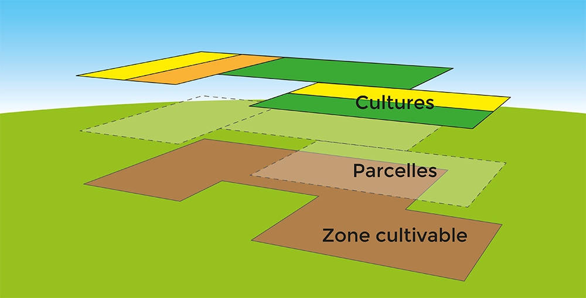
Si vous êtes un agriculteur·rice·s français(e) le tableau suivant montre la correspondance des niveaux géographiques entre TelePAC et Ekylibre.

Glissez pour parcourir le tableau
Tableau de correspondance TelePAC/Ekylibre
Îlot
Zone cultivable
Parcelle
Culture
Tableau 1
La création des zones cultivables peut être faite de trois manières dans Ekylibre.

Glissez pour parcourir le tableau
Méthodes de création des zones cultivables
Utilisation d'un fichier de déclaration TelePAC
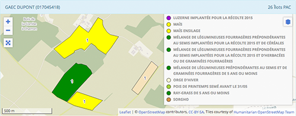Si vous êtes agriculteur·rice·s français(e), c'est la méthode la plus simple. Elle permet d'intégrer directement vos zones cultivables et vos activités agricoles. Si toutes vos activités agricoles ne sont pas déclarées à la PAC vous pourrez les ajouter par l'une des deux autres méthodes. L'opération se fait généralement dans l'assistant de démarrage mais peut se faire après.
Dessin des zones à la main
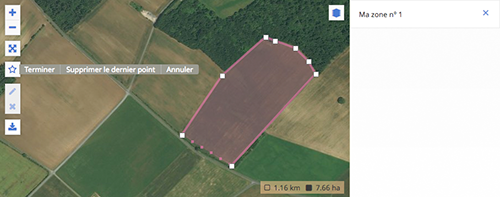Ekylibre offre un outil de dessin de zones géographiques dans les cartes permettant de dessiner directement en se repérant sur le fond de carte (routier, satellitaire…). Plusieurs fonds sont à disposition pour faciliter ce repérage.
Utilisation d'un fichier géographique
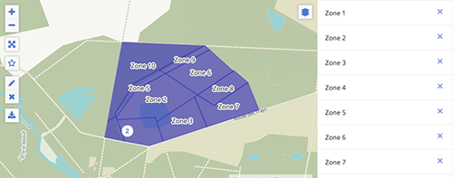Ekylibre supporte les fichiers géographiques aux formats les plus classiques tels que Universel (.gml), GeoJSON (.json) ou Google Earth (.kml).
Tableau 2
Si vous ne déclarez pas à la PAC, passez directement à la section d.
Vous devez disposer du fichier TelePAC au format XML (un format de fichier de données). Ekylibre ne récupère dans l'intégration du fichier TelePAC que vos surfaces agricoles ainsi que vos activités déclarées à la PAC.
Notez que ce service n’est disponible que pour les exploitations situées en France.

Sur Linux ou Windows : faites un clic droit sur le fichier et choisissez "Propriétés". Sur Mac, faites un Contrôle-clic sur le fichier et choisissez "Lire les informations".
Si vous ne disposez pas d'un fichier au format XML ou que votre fichier n'est pas à jour, vous pouvez suivre la procédure suivante pour le récupérer chez TelePAC.
A - Procédure de récupération du fichier TelePAC
En suivant les étapes ci-dessous vous serez guidé(e) pour récupérer votre fichier TelePAC au format XML afin d'intégrer vos zones cultivables et vos activités agricoles dans l'application.
Pour une meilleure praticité, téléchargez Documents par Readdle sur l'App Store (gratuit).
Lancez l'application et sélectionnez "Navigateur" dans le menu à gauche. Saisissez dans le champ l'adresse TelePAC ci-dessous, puis suivez les étapes de la récupération du fichier. Touchez le lien pour afficher le contenu du fichier XML (une suite de chiffres).
Touchez l'icône de téléchargement en haut à droite de l'écran
Si vous ne l'avez pas déjà installé, téléchargez le navigateur Google Chrome (gratuit).


Entrez le numéro PACAGE et le mot de passe utilisé au moment de la dernière déclaration.

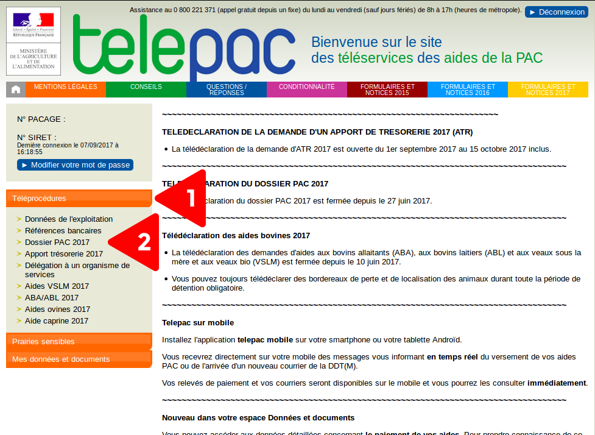
Dans la liste à gauche cliquez 1) sur "Téléprocédures", puis 2) sur "Dossier PAC 20XX" (année de déclaration).

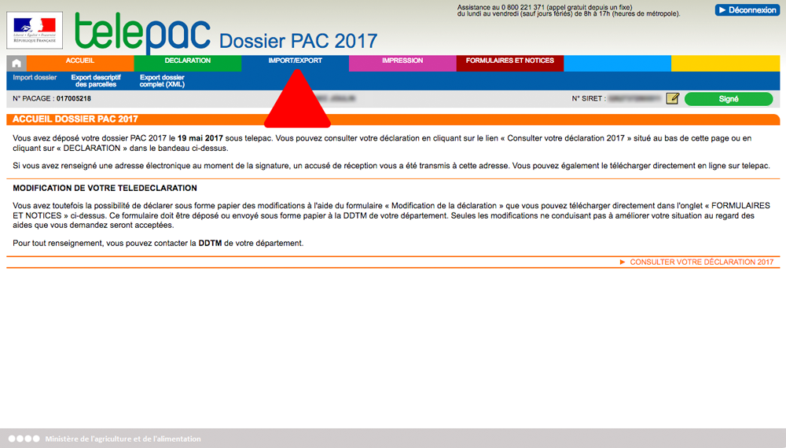
Cliquez sur "IMPORT/EXPORT" dans la barre de menu en haut.

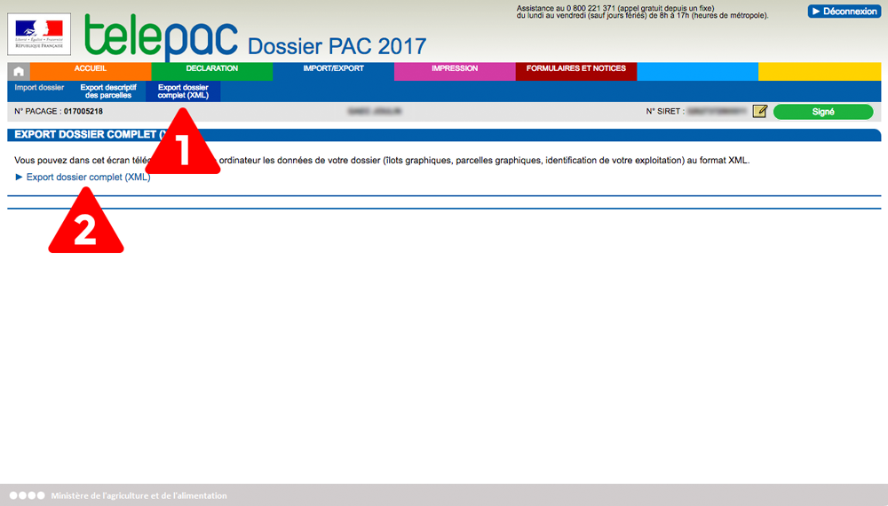
Cliquez 1) sur "Export dossier complet (XML)" dans la barre en haut, puis 2) sur le texte "Export dossier complet (XML)".
Le fichier va venir se placer dans vos téléchargements.
Le fichier TelePAC téléchargé se présente sous la forme :
Dossier-PAC-20XX_dossier_064123456_20170105134432.xml
Si vous disposez d'un fichier TelePAC au format XML vous pouvez suivre la procédure suivante.
B - Procédure de configuration des zones de cultures et activités agricoles à partir du fichier de "Déclaration TelePAC"
Votre fichier de déclaration TelePAC contient les zones de culture (îlots TelePAC et activités agricoles) que vous déclarez à TelePAC. La procédure montre comment l'utiliser. Pour les zones ou activités non déclarées à la PAC, reportez-vous au tableau 2 plus haut.
Si vous êtes toujours sur le panneau "Bienvenue dans l'assistant de Démarrage", cliquez surpour arriver au panneau d'import TelePAC.
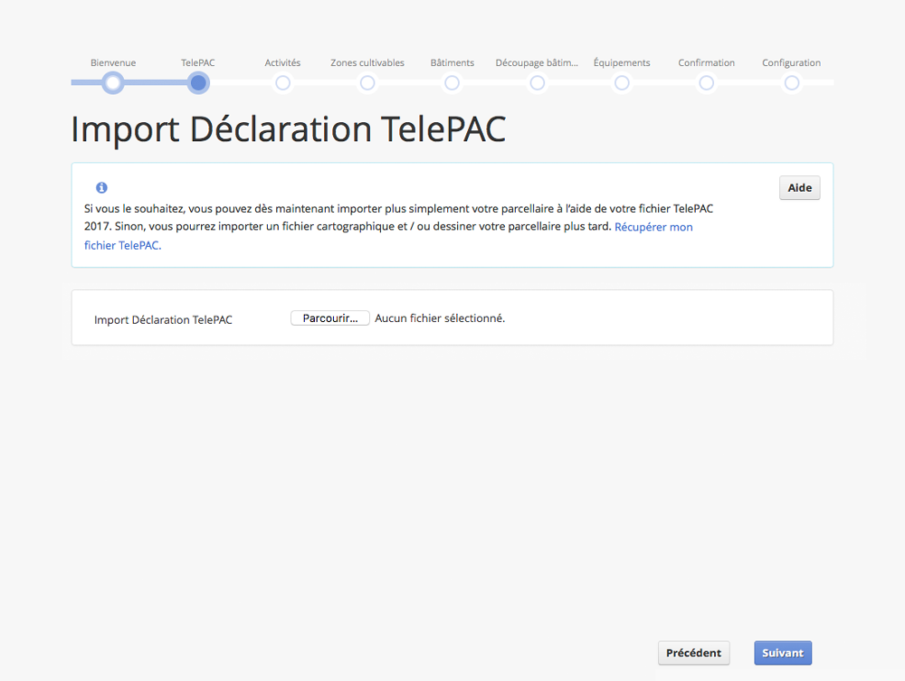
Sélectionnez le fichier sur votre disque ou clé USB.
Dès que vous aurez validé le choix du fichier, l'intégration des informations commencera.
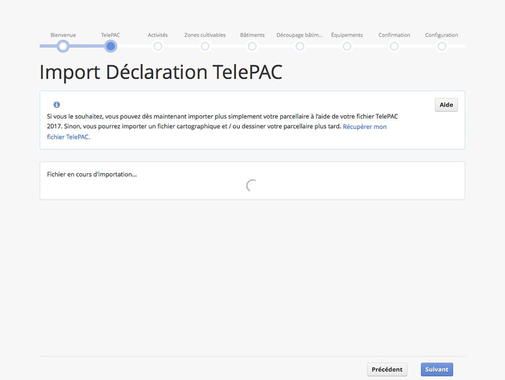
Une fois la récupération terminée, la carte affiche vos zones cultivables et activités agricoles.
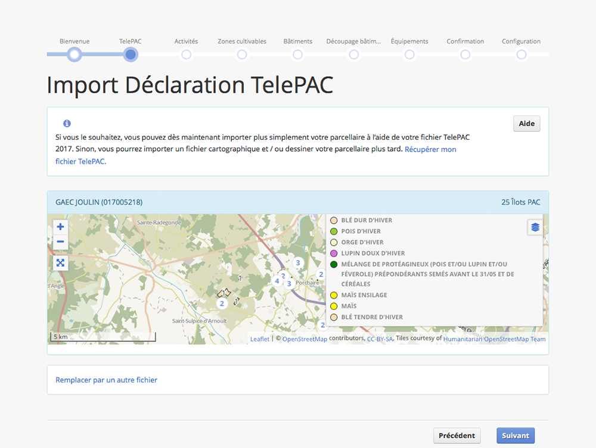
Notez que les chiffres dans les pastilles blanches sur la carte indiquent le nombre d'activités agricoles localisées à cet endroit. Si vous zoomez sur la carte, vous pourrez voir le détail de ces zones.
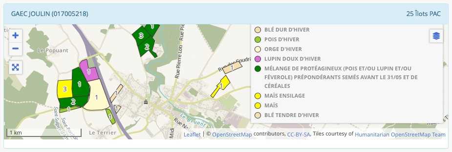

Prenez le temps de vérifier que les zones et activités agricoles sont conformes à vos attentes.
Si vous souhaitez remplacer les informations intégrées par celles d'un autre fichier de déclaration TelePAC vous pouvez le faire en cliquant sur "Remplacer par un autre fichier".

Maintenant que vos informations TelePAC sont importées, vous pouvez passer au panneau "Activités" en cliquant sur "Suivant".
Comme évoqué dans le tableau 2 , il est possible de créer des zones cultivables et activités agricoles en dessinant ou à l'aide d'un fichier géographique.
Ces opérations se réalisent dans l'étape "Activités" de l'assistant de démarrage.
Si vous êtes toujours sur le panneau "Bienvenue dans l'assistant de démarrage", cliquez sur "Suivant" pour arriver au panneau d'import TelePAC puis à nouveau sur "Suivant" pour arriver au panneau "Activités".
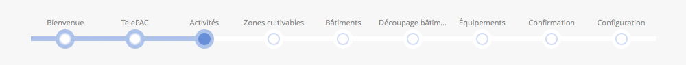
Passez au chapitre suivant de ce guide.